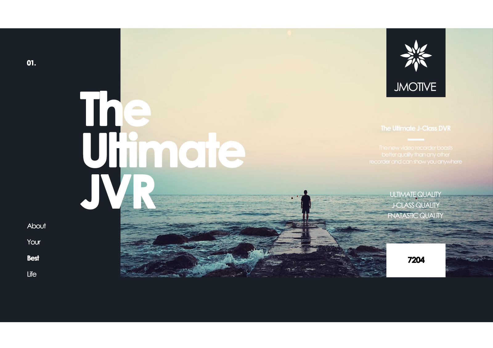

The recent assessment that Russia paid bounties to the insurgents to attack U.S. troops stunned many, but officials said the Kremlin’s outreach began almost a decade ago. 
KABUL, Afghanistan — During one of the most violent stretches of fighting in northern Afghanistan, as the Taliban scored victories that had eluded them since the beginning of the conflict, the top American commander went public with a suspicion that had nagged for years: Russia was aiding the insurgents.
In diplomatic circles in Kabul around the time of that accusation, in 2017, there were murmurs that the Russian assistance had included night-vision goggles and armor-piercing ammunition.